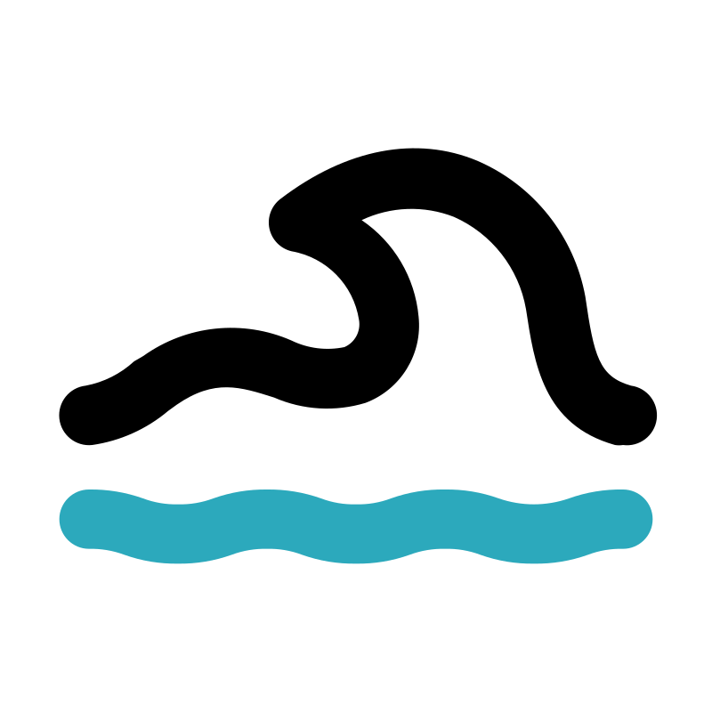

FAKULTAS KEGURUAN DAN ILMU PENDIDIKAN
PENDIDIKAN GEOGRAFI
Home
Profil
Informasi
Home
›
Peta Sebaran Bencana
🗺️ PETA SEBARAN BENCANA
Kabupaten Tanggamus 2025 — Pemetaan wilayah rawan bencana secara interaktif
Filter Bencana :
🗂️ Semua
🌊 Banjir
🌏 Gempa Bumi
🌪️ Puting Beliung
⛰️ Tanah Longsor
📌 LEGENDA TITIK BENCANA
Banjir / Banjir Rob / Banjir Bandang
Gempa Bumi
Puting Beliung
Tanah Longsor

Gelombang / Tsunami
Tenggelam
🎨 KETERANGAN WARNA KECAMATAN
Zona 1
Zona 2
Zona 3
Zona 4
Zona 5
← Kembali ke Beranda